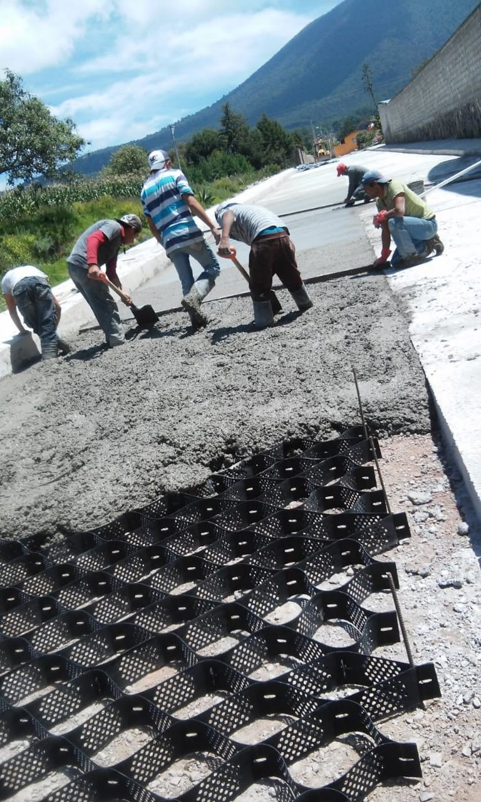

Historia
"ACM CONCRETOS” fue fundada en 2012 es una empresa instituida por una Persona Física Con Actividad
Empresarial y Profesional, creada con la finalidad de dar servicio en la fabricación de concreto
premezclado y al comercio al por mayor de otros materiales para la industria de la construcción
particular, industrial y obra pública.
Misión
Satisfacer las necesidades de construcción de nuestros clientes, consolidándonos como la compañía de
producción de concreto premezclado más eficiente, confiable y eficaz de la zona norte del Estado de
México a través de la capacitación y mejora continua de nuestros procesos, productos y servicios."
Visión
Pretendemos ser la empresa líder del ramo en la fabricación de concreto premezclado, que impulsa el
desarrollo de la zona norte del Estado de México, con construcciones durables, rentables y de alta
calidad brindando soluciones confiables para la construcción orientadas a mejorar la calidad de
vida.
COLADOS CASA- HABITACIÓN

COLADO CON BOMBA EN CASA-HABITACIÓN SAN JOSÉ DEL RINCÓN
F’C 250 KG/CM2 .

LOSA MACIZA, SAN ONOFRE CARMONA, F’C 250 KG/CM2 CON BOMBA ESTACIONARIA

COLADO DE LOSA, SAN JOSÉ DEL RINCÓN, F’C 250 KG/CM2 CON BOMBA PLUMA

COLADO DE LOSA, TLALPUJAHUA, F’C 250 KG/CM2 CON BOMBA PLUMA
PAVIMENTO HIDRÁULICO
EL OBRAJE, SAN FELIPE DEL PROGRESO, MÉXICO CONCRETO F’C 250
KG/CM2 TIRO DIRECTO.

BOREJE, SAN FELIPE DEL PROGRESO, MÉXICO. CONCRETO F’C 200
KG/CM2 TIRO DIRECTO.

JOCOTITLAN, MÉXICO, PAVIMENTO HIDRÁULICO CONCRETO A LA FLEXIÓN MR-45.
SANTIAGO ACUTZILAPAN, ATLACOMULCO,F’C 200 KG/CM2 TIRO DIRECTO.